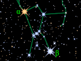

 BrightStar5 is a library module from the Persistence of Vision Raytracer (POV-Ray) Object Collection that presents selected data from the Yale Bright Star Catalogue, preliminary 5th edition (BSC5) in a form suitable for POV-Ray. The BSC5 contains all nighttime stars of magnitude 6.5 and brighter (roughly all nighttime stars visible to the naked eye), plus a few dimmer ones. Macros are included for star coloration and Bayer designation labels.
In version 1.1, the stars are indexed, which greatly reduces parse times when seeking stars by catalog key. Versions 1.1.1 and 1.1.2 have only minor tweaks and a bug fix.
| Key Files | |
|---|---|
| File | Description |
brightstar5.html |
The user manual (this document) |
brightstar5.inc |
Tools for using stellar data |
brightstar5_data.inc |
Stellar data |
brightstar5_index.inc |
Indexes on the stellar data |
brightstar5.pov |
A scene description file demonstrating many of the features of BrightStar5 |
brightstar5.png |
Sample output images |
brightstar5_thumbnail.png |
|
| Administrative Files | |
| File | Description |
READMEnnnnnn.html |
Important information about using the POV-Ray Object Collection |
brightstar5_description.txt |
A brief description of BrightStar5 |
brightstar5_keywords.txt |
A list of keywords |
brightstar5_prereqs.txt |
Prerequisites |
brightstar5.css |
Other administrative files |
cc-LGPL-a.png |
|
Versionnnnnnn.js |
|
The italicized nnnnnn in some of the file names represents the 6-digit number that is in the name of the .zip file. If you downloaded this module from a repository other than lib.povray.org, the files cc-LGPL-a.png, READMEnnnnnn.html, and Versionnnnnnn.js may not be present. Please see the Object Collection User’s Guide if the README file is not present.
times.ttf) from Monotype Imaging, which comes standard with Microsoft Windows. If you do not have this font file, you may edit the scene file to use any Unicode font that contains both the Latin and Greek alphabets.
All file names in this module and all global and local identifiers defined in the include files comply fully with the Object Collection naming standards, as revised August 2008 and proposed August 2012. The files in this module may be safely stored in the same folder as other fully compliant Object Collection modules.
The reserved prefixes for this module are “BrightStar5” and “BSC5,” including any uppercase and lowercase variants. To avoid conflicts, do not introduce into your scene description file any identifiers with either of these prefixes as names, or any identifiers that start with either of these prefixes plus an underscore.
The standard include file math.inc is used by brightstar5.inc. The identifier View_POV_Include_Stack from the standard include file debug.inc is referenced by the include files, although debug.inc itself is not used.
If your scene’s assumed_gamma is not 1.0, then set BSC5_Gamma to that same value. For example:
global_settings { assumed_gamma 1.8 }
#declare BSC5_Gamma = 1.8;
Include this file once prior to using any of the macros:
#include "brightstar5.inc"
Including the file more than once is harmless, though unnecessary.
In order to accommodate Greek letters, the charset is automatically set to utf8. Note that using the POV-Ray GitHub master branch (post-3.8 feature freeze) will trigger a warning about the charset; and if you use Bayer labels in this situation with #version less than 3.8, you will get a slew of possible parse error messages. However, the labels should render correctly.
At least through version 3.8.0, POV-Ray will issue a warning that the experimental feature spline is used. This is normal and expected.
| Identifier | Type | Description | Default |
|---|---|---|---|
BSC5_Gamma |
float |
In order for the color macros to work properly, this parameter must be declared with the same value as the scene’s
Note: BrightStar5 does not actually set the scene’s |
1.0 |
The stellar data are stored in two 2 dimensional arrays. Array BSC5_Data contains numerical data, and array BSC5_s_Data contains string data. Each row of the arrays contains data for one object. The stars are stored in order by their catalog ID, also known as the HR number. Note that the HR number is not the same as the array row index.
If a numerical field in the BSC5 is blank, then the corresponding element of BSC5_Data will contain the value BSC5_NO_DATA. If a character field in the BSC5 is blank, then the corresponding element of BSC5_s_Data will contain the null string.
| Index Name | Field Description | Notes |
|---|---|---|
BSC5_HR |
Harvard Revised Photometry Catalogue (HR) number | This also serves as the Bright Star Catalogue ID. |
BSC5_COLORBV, BSC5_COLOURBV |
B − V color index | This is a single float value, not an RGB color. The lower the B − V index value, the bluer the star; the higher the value, the redder the star. To estimate an RGB color, pass the value to macro BSC5_Color() or BSC5_Colour(). |
BSC5_DEC |
J2000 declination, in degrees | This is the star’s celestial “latitude,” calculated from several fields in the BSC5. |
BSC5_FLAMSTEED |
Flamsteed number | This value is parsed from a larger character field in the BSC5. |
BSC5_HD |
Henry Draper Catalogue (HD) number | |
BSC5_MAG |
Visual magnitude | This is the star’s visual brightness, as seen from Earth. The higher the magnitude, the dimmer the star appears to us. |
BSC5_PARALLAX |
Parallax, in arcseconds | This is the reciprocal of the star’s distance in parsecs. |
BSC5_PROPERDEC |
Proper motion in declination, in arcseconds per year | This is the star’s change in celestial “latitude” over time. |
BSC5_PROPERRA |
Proper motion in right ascension, in arcseconds per year | This is the star’s change in celestial “longitude” over time. |
BSC5_RA |
J2000 right ascension, in hours | This is the star’s celestial “longitude,” calculated from several fields in the BSC5. |
BSC5_RADIALV |
Heliocentric radial velocity, in kilometers per second | This is negative for approaching stars and positive for receding stars. |
BSC5_SAO |
Smithsonian Astrophysical Observatory (SAO) number | |
BSC5_SUPER |
Bayer multiple star superscript | This value is parsed from a larger character field in the BSC5. |
For example, to retrieve the visual magnitude of star HR 2491, use:
BSC5_Data [BSC5_Seek_HR (2491)] [BSC5_MAG]
| Index Name | Field Description | Notes |
|---|---|---|
BSC5_BAYER |
Bayer Greek letter name | Use macro BSC5_Greek_char() to convert the name to a Greek character. (This value is parsed from a larger character field in the BSC5.) |
BSC5_COMP |
Aitken’s multiple star component(s) | A component ID is a single letter. One catalog entry may have two components, in which case the component IDs are concatenated into a single string. Note that the Aitken’s catalog ID is not included in this version of BrightStar5. |
BSC5_CONST |
Constellation abbreviation | This field is populated only if the star has a Bayer or Flamsteed designation. (This value is parsed from a larger character field in the BSC5.) |
For example, to retrieve the Bayer Greek letter name of star HR 2491, use:
BSC5_s_Data [BSC5_Seek_HR (2491)] [BSC5_BAYER]
The BSC contains 14 novae and non-stellar objects whose data are mostly omitted from the 5th edition. Accordingly, the corresponding array fields are blank. Since these are the only objects in the BSC5 that are not cross-referenced to the Draper Catalogue, they can be identified by having an HD number of BSC5_NO_DATA in the BSC5_Data array. In other words, if and only if
BSC5_Data [MyIndex] [BSC5_HD] = BSC5_NO_DATAthen the object at the array row MyIndex is not a star, and has no associated astrometric data.
Creates a text object of a star’s Bayer designation. The front of the object will lie in the x-y plane, and the object will be one unit deep in the z direction. If s_Letter is a Greek letter name, then that letter’s lowercase glyph will be rendered; otherwise the string will be rendered as-is. The Greek letter name test is not case sensitive. A null string s_Letter will cause a parse error. No other validity checks are performed.
| Formal Parameter | Type | Description |
|---|---|---|
s_Letter |
string | The Greek letter name, e.g., "alpha", or a Latin letter string. The Greek letter name test is not case sensitive. |
Super |
float | The superscript number, or BSC5_NO_DATA for no superscript. |
s_Const |
string | The constellation. |
s_Comp |
string | The multiple star component ID, or the null string for no component ID. |
s_Font |
string | The file name of a Unicode font that includes both the Latin and Greek alphabets. |
Creates a text object of a star’s Bayer designation. The front of the object will lie in the x-y plane, and the object will be one unit deep in the z direction. If the star index is invalid or the star has no Greek letter Bayer designation, then a parse error will result.
| Formal Parameter | Type | Description |
|---|---|---|
Index |
float | The array row index of the star. The index may be obtained with any of the macros whose names start with “BSC5_Seek_.” |
Const |
float/Boolean | If true, the constellation abbreviation will be included. If false, it will be omitted. |
Comp |
float/Boolean | If true, the multiple star component ID(s), if any, will be included. If false, any such ID will be omitted. |
s_Font |
string | The file name of a Unicode font that includes both the Latin and Greek alphabets. |
These return an RGB estimate of the color of a star based on its B − V index. The color space is assumed to be sRGB. The B − V value will be clipped to the domain −0.374 through +6.0. The color will be normalized such that the highest primary color value is 1.0.
If the B − V value is BSC5_NO_DATA, then the color white (rgb 1) will be returned.
If you set assumed_gamma to any value other than 1.0, remember to declare BSC5_Gamma with that same value prior to calling either of these macros.
| Formal Parameter | Type | Description |
|---|---|---|
BminusV |
float | The B − V index. |
BSC5_Color (BSC5_Data [BSC5_Seek_Bayer ("Alpha", BSC5_NO_DATA, "Ori", "")] [BSC5_COLORBV])
B − V values greater than about +4.06 result in oranges and reds that are too rich to be displayed by standard computer monitors—that is, the colors are outside the gamut of the sRGB color space. In HSL or HSV terms, the saturation is greater than 1. For such values, in-gamut approximations will be used.
The color calculation does not include any effects of the Earth’s atmosphere. The actual appearance of a star depends greatly on atmospheric conditions and the star’s altitude above the horizon.
Returns a lowercase Greek letter character, given the name of the letter. The name test is case insensitive. If there is no such Greek letter, the null string is returned. Lowercase final sigma (‘ς’) is neither recognized nor returned.
Note: At the time this module is published, POV-Ray does not write Greek letters to text streams or text files.
| Formal Parameter | Type | Description |
|---|---|---|
s_Name |
string | The name of the Greek letter. This argument is not case sensitive. |
Returns the array row index of a star by Bayer designation. If no multiple star component ID is given, then the index of the first entry found is returned. (As the search algorithm is subject to change, the results of ambiguous inputs should not be relied upon.) If the star is not in the BSC5, BSC5_NOT_FOUND is returned.
The BSC5 does not record Latin letter Bayer designations (except occasionally in the variable star ID field), so a search on these always returns BSC5_NOT_FOUND.
Note: The catalog lists three binary stars whose individual components have separate entries but the same Bayer designation and no Aitken’s component ID. Because the components of each pair have the same Bayer search key, only one of the components is accessible to BSC5_Seek_Bayer(). These stars are:
In all three cases, the brighter component has the lower HR number, although for π Lup and γ CrA, the components of each pair are of near equal brightness. For ι Pic and π Lup, the color data are combined and reported only in the brighter components (HR 1563 and HR 5605), respectively.
As noted above, no guarantee is made for which component is returned by BSC5_Seek_Bayer(). These stars should be retrieved by a different method, such as by HR number.
| Formal Parameter | Type | Description |
|---|---|---|
s_Letter |
string | The Greek letter name, e.g., "alpha". This argument is not case sensitive. |
Super |
float | The superscript number, or BSC5_NO_DATA for no superscript. |
s_Const |
string | The three-letter constellation abbreviation. This argument is case sensitive. |
s_Comp |
string | The multiple star component ID, or the null string for no component ID. This argument must be uppercase. |
Returns the array row index of a star by Draper Catalogue (HD) number. If the star is not in the BSC5, BSC5_NOT_FOUND is returned.
| Formal Parameter | Type | Description |
|---|---|---|
Number |
float | The Draper Catalogue number. |
Returns the array row index of a star by Flamsteed designation. If no multiple star component ID is given, then the index of the first entry found is returned. (As the search algorithm is subject to change, the results of ambiguous inputs should not be relied upon.) If the star is not in the BSC5, BSC5_NOT_FOUND is returned.
Note: The star 12 Aquarii (12 Aqr) is a binary star whose individual components have separate entries but the same Flamsteed designation and no Aitken’s component ID. Because they have the same Flamsteed search key, only one component is accessible to BSC5_Seek_Flamsteed().
As no guarantee is made for which component is returned by BSC5_Seek_Flamsteed(), these stars should be retrieved by a different method, such as by HR number. Their HR numbers are 5808 and 5809. HR 5809 is the brighter component, and the color data for both components are combined and reported only in HR 5809.
| Formal Parameter | Type | Description |
|---|---|---|
Number |
float | The Flamsteed number. |
s_Const |
string | The three-letter constellation abbreviation. This argument is case sensitive. |
s_Comp |
string | The multiple star component ID, or the null string for no component ID. This argument must be uppercase. |
Returns the array row index of a star by Harvard Revised Photometry Catalogue (HR) number. The HR number is the primary index of the Bright Star Catalogue. If the catalog number is invalid, BSC5_NOT_FOUND is returned.
| Formal Parameter | Type | Description |
|---|---|---|
Number |
float | The HR number. |
Returns the array row index of a star by Smithsonian Astrophysical Observatory (SAO) number. If no multiple star component ID is given, then the index of the first entry found is returned. (As the search algorithm is subject to change, the results of ambiguous inputs should not be relied upon.) If the star is not in the BSC5, BSC5_NOT_FOUND is returned.
Note: The catalog lists two binary stars whose individual components have separate entries but the same SAO number and no Aitken’s component ID. Because the components of each pair have the same SAO search key, only one of the components is accessible to BSC5_Seek_SAO(). These stars are:
In both cases, the brighter component has the lower HR number, although the components of each pair are of near equal brightness. For SAO 225426, the color data are combined and reported only in HR 5605.
As noted above, no guarantee is made for which component is returned by BSC5_Seek_SAO(). These stars should be retrieved by a different method, such as by HR number.
| Formal Parameter | Type | Description |
|---|---|---|
Number |
float | The SAO number. |
s_Comp |
string | The multiple star component ID, or the null string for no component ID. This argument must be uppercase. |
Makes certain changes to the BSC5 numeric array:
Returns a linear brightness value that corresponds to a magnitude. The returned value is relative to the brightness of a star of the magnitude specified by the second argument. For example, BSC5_fn_Brightness (3.5, 5) returns approximately 3.98, meaning that a 3.5 magnitude star is about 3.98 times brighter than a magnitude 5 star.
| Formal Parameter | Type | Description |
|---|---|---|
x |
float | The magnitude of the star in question. |
y |
float | The magnitude that corresponds to a brightness value of 1.0. |
| Identifier | Type | Description | Value |
|---|---|---|---|
BRIGHTSTAR5_VERSION |
float | The BrightStar5 version, in case the scene file needs that information. | 1.12 |
BSC5_N |
float | The number of entries in the catalog. | 9110 |
BSC5_NO_DATA |
float | A flag that there is no numeric datum. | * |
BSC5_NOT_FOUND |
float | A flag that the request cannot be fulfilled. | * |
*A black box value.
Any identifiers in brightstar5.inc, brightstar5_data.inc, and brightstar5_index.inc that are not documented in this manual are considered “private” or “protected,” and are subject to change or elimination in a future update.
Copyright © 2017 – 2021 Richard Callwood III. Some rights reserved.
This library is free software; you can redistribute it and/or modify it under the terms of the GNU Lesser General Public License version 2.1 as published by the Free Software Foundation.
This library is distributed in the hope that it will be useful, but WITHOUT ANY WARRANTY; without even the implied warranty of MERCHANTABILITY or FITNESS FOR A PARTICULAR PURPOSE.
| Version | Date | Notes |
|---|---|---|
| unpublished | 2012 February 3 – 4 |
|
| unpublished | 2015 November 5 – 6 |
|
| 1.0 | 2017 February 4 | The initial Object Collection release:
|
| 1.1 | 2017 December 7 |
|
| 1.1.1 | 2019 March 25 |
|
| 1.1.2 | 2021 August 16 |
|
Obviously this module does not do a comprehensive data extraction of the BSC5. The direction this module takes in the future will depend, in part, on user feedback.
{kind=link}